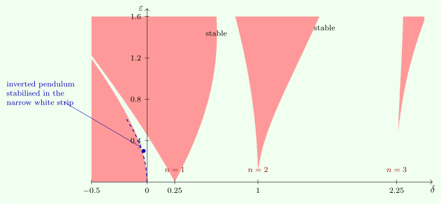

7.5 Mathieu’s equation and parametric resonance
The simplest Hill equation is Mathieu’s equation \[ y'' + (\delta + \varepsilon \cos t)y = 0 , \] with period \(T = 2\pi \). For \(\varepsilon = 0\) and \(\delta = \omega ^2 > 0\), \(\Delta = 2\cos 2\pi \omega \), which equals \(\pm 2\) exactly when \(\omega = n/2\), that is \(\delta = n^2/4\). From each of these points a region of instability, an Arnold tongue, opens as \(\varepsilon \) grows (Figure 10). Inside the tongues the oscillator is driven to grow by the periodic variation of its own stiffness.

The first tongue by harmonic balance
Near \(\delta = \frac 14\) the free oscillation has frequency \(\frac 12\), half the forcing frequency, and the boundary solutions are \(4\pi \)-periodic. Seek \(y \approx a\cos \frac t2 + b\sin \frac t2\). Since \(\cos t\cos \frac t2 = \frac 12\bigl (\cos \frac {3t}2 + \cos \frac t2\bigr )\) and \(\cos t\sin \frac t2 = \frac 12\bigl (\sin \frac {3t}2 - \sin \frac t2\bigr )\), substituting and keeping only the terms at frequency \(\frac 12\) gives \[ \Bigl (\delta - \frac 14 + \frac \varepsilon 2\Bigr )a = 0, \qquad \Bigl (\delta - \frac 14 - \frac \varepsilon 2\Bigr )b = 0 . \] A non-zero solution exists only on the lines \(\delta = \frac 14 \pm \frac \varepsilon 2\), which are the edges of the first tongue to first order in \(\varepsilon \). This is the rule of parametric resonance: a parameter varying at twice the natural frequency destabilises the oscillation most strongly. A child on a swing pumps twice per cycle, standing at the bottom and squatting at the top, which varies the effective length at twice the swing frequency.
The inverted pendulum
For \(\delta < 0\), the equation without forcing describes an inverted pendulum, \(y'' = |\delta |y\), which falls. Kapitza (1951) showed that vibrating the support vertically can hold it upright. With support displacement \(a\cos \omega t\), pendulum length \(\ell \) and time \(\tau = \omega t\), the linearised equation for the angle from the upright position is Mathieu’s equation with \[ \delta = -\frac {g}{\ell \omega ^2} < 0, \qquad \varepsilon = \frac a\ell . \] For small \(\varepsilon \) the stable strip in Figure 10 is \(-\varepsilon ^2/2 < \delta < 0\), and the condition for stability becomes \(a^2\omega ^2 > 2g\ell \): the support must be shaken fast enough. The method of averaging, which explains the strip by an effective potential, is described in the last section.
Questions on this section
Stuck on something here? Ask below and it stays attached to this topic.